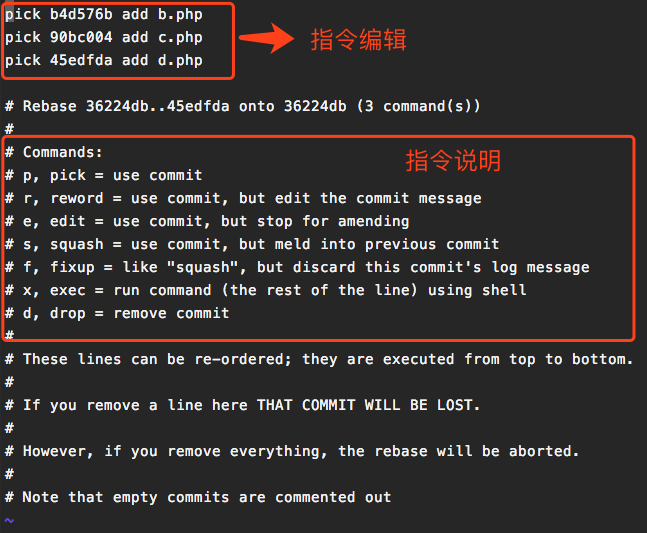
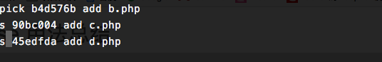
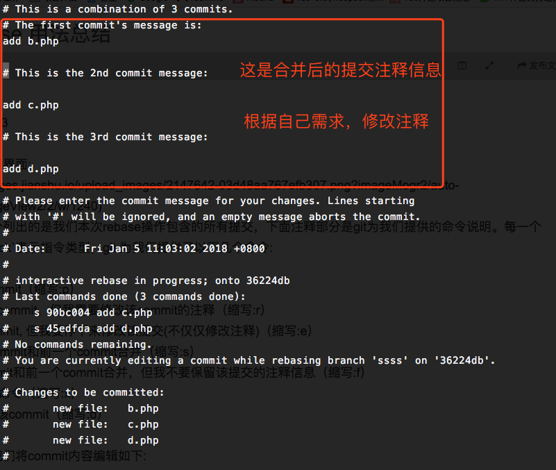

Usage of git rebase Command
This article mainly refers to here: https://git-scm.com/docs/git-rebase
git-rebase - Reapply commits on top of another base tip.
Its functions are summarized as follows: edit, delete, copy and paste a linear commits history.
Therefore, the rational use of rebase command can make our commits history clear and concise.
Premise: do not modify any commit via rebase command that has been pushed to the public repository except the branch that you play by yourself.


Merge multiple commits into a complete commit
When we commit code to the local repository many times, we can merge multiple commits (e.g. B, C and D as below) into a complete commit (e.g. B' as below) in order to make the commits record more concise and clear, and then push it to the public repository.
A---B---C---D
|
A---B'
Suppose we now add 4 commits to the test branch, and our goal is to merge the last 3 commits into one.
We use the following command:
git rebase -i [startpoint] [endpoint]Among, -i means -interactive, that is, an interactive interface will pop up for users to edit and complete the merge operation, [startpoint] [endpoint] specifies an interval to edit. If [endpoint] is not specified, the end of the interval is the commit that the current branch head points to by default (Note: the interval specifies an interval between front opening and back closing).
After viewing the log, we run the following command (Note: please replate 36224db to the hash value of your real base commit):
git rebase -i 36224dbor
git rebase -i HEAD~3Then we will see the following interface:
In the screenshot, the uncommented part above lists all commits in our current rebase operation, and the annotation part below is the commands description provided by Git.
Pick in front of each commit id indicates the instruction type.
Git provides us with the following commands:
- pick: use commit (abbreviation: p)
- reward: use commit, but edit the commit message (abbreviation: r)
- edit: use commit, but stop for amending (abbreviation: e)
- squash: use commit, bur meld into previous commit (abbreviation: s)
- fixup: like "squash", but discard this commit's log message (abbreviation: s)
- exec: run commit (the rest of the line) using shell (abbreviation: p)
- drop: remove commit (abbreviation: d)
According to our requirements, we edit the commit content as below:
Then the interface to edit commit message appears:
After editing and saving, we finally complete the merge of commit.